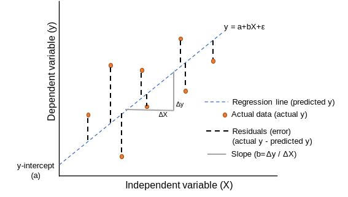
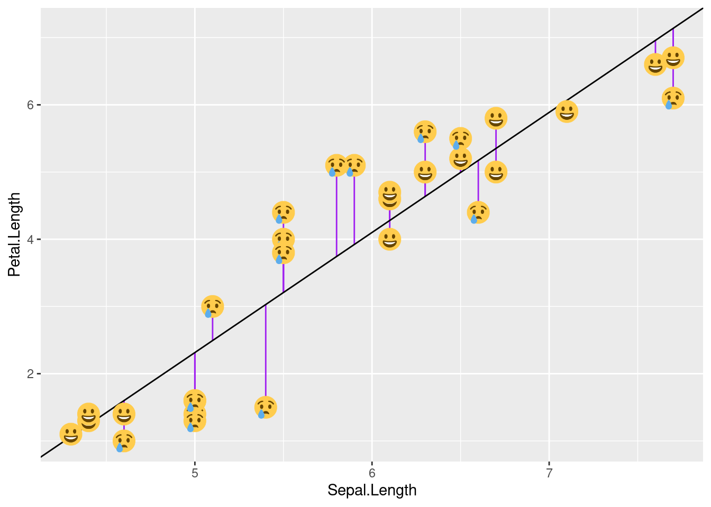
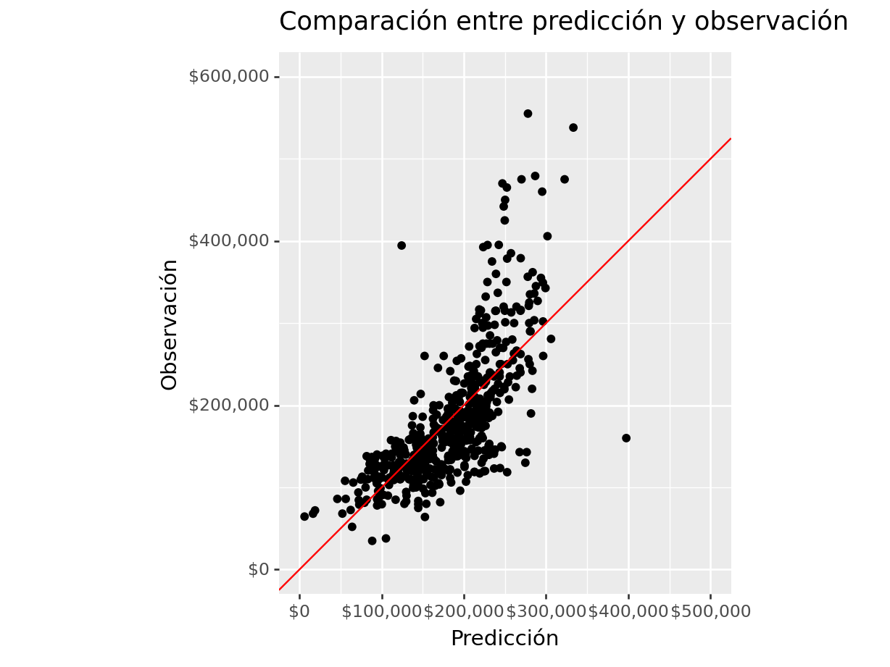
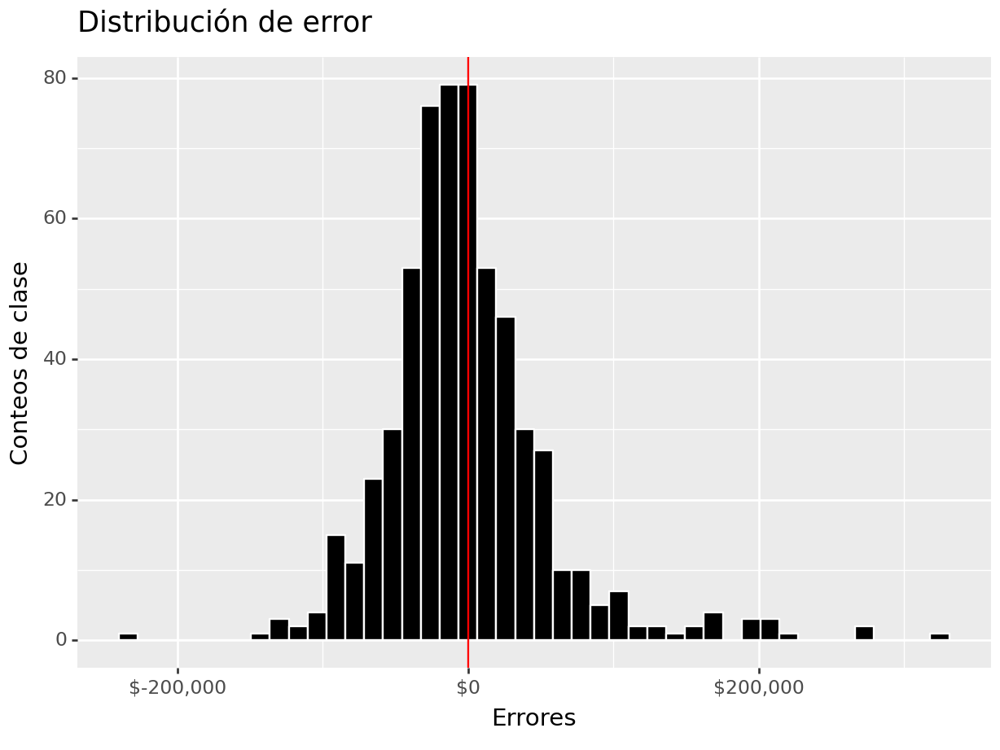
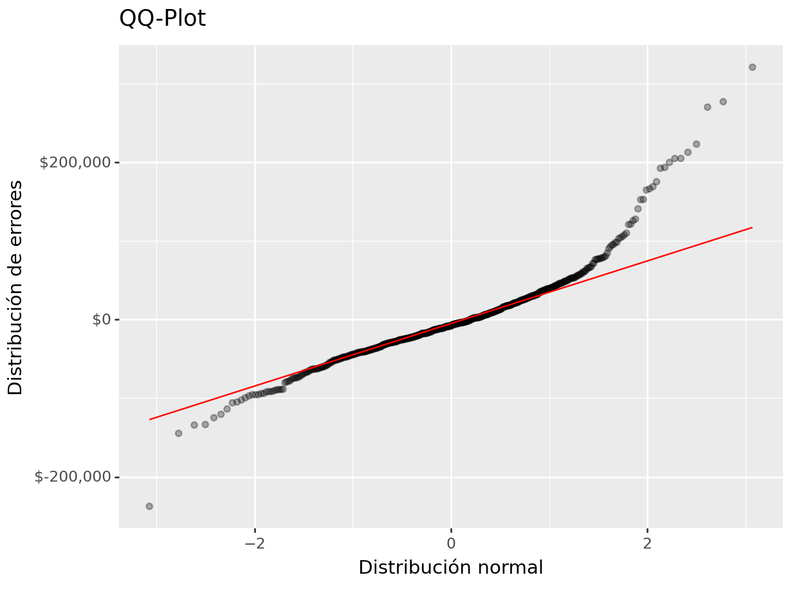
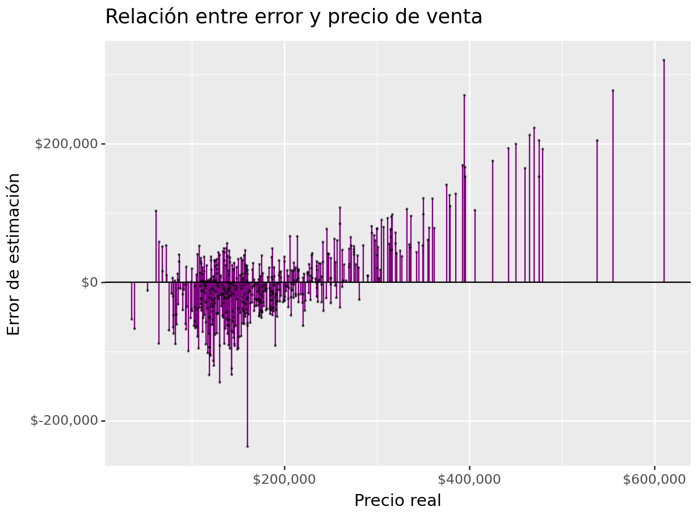

Capítulo 5 Regresión Lineal
En esta sección aprenderemos sobre regresión lineal simple y múltiple, como se ajusta un modelo de regresión en python, las métricas de desempeño para problemas de regresión y como podemos comparar modelos con estas métricas. Existen dos tipos de modelos de regresión lineal:
5.1 Regresión lineal simple
En la regresión lineal simple se utiliza una variable independiente o explicativa “X” (numérica o categórica) para estimar una variable dependiente o de respuesta numérica “Y” mediante el ajuste de una recta permita conocer la relación existente entre ambas variables. Dicha relación entre variables se expresa como:
\[Y = \beta_0 + \beta_1X_1 + \epsilon \approx b + mx\] Donde:
\(\epsilon \sim Norm(0,\sigma^2)\) (error aleatorio)
\(\beta_0\) = Coeficiente de regresión 0 (Ordenada al origen o intercepto)
\(\beta_1\) = Coeficiente de regresión 1 (Pendiente o regresor de variable \(X_1\))
\(X_1\) = Variable explicativa observada
\(Y\) = Respuesta numérica
Debido a que los valores reales de \(\beta_0\) y \(\beta_1\) son desconocidos, procedemos a estimarlos estadísticamente:
\[\hat{Y} = \hat{\beta}_0 + \hat{\beta}_1X_1\] Con \(\hat{\beta}_0\) el estimado de la ordenada al origen y \(\hat{\beta}_1\) el estimado de la pendiente.
5.1.1 Interpretación
Una de las bondades de los modelos lineales es la interpretabilidad de los elementos que lo componen. Los coeficientes de regresión.
Los coeficientes de regresión representan el cambio medio en la variable de respuesta para una unidad de cambio en la variable predictora. Este control estadístico que ofrece la regresión es importante, porque aísla el rol de una variable del resto de las variables incluidas en el modelo.
La clave para entender los coeficientes es pensar en ellos como pendientes, y con frecuencia se les llama coeficientes de pendiente. Ilustremos lo anterior con el siguiente ejemplo de Didi:
\[\begin{align} \hat{Y} &= \hat{\beta}_0 \quad + \hat{\beta}_1X_1 \\ & = 108.6 + 156X_1 \end{align}\]
\(\hat{\beta}_0\) = Es el valor esperado en la variable de respuesta cuando \(\beta_1\) es cero.
\(\hat{\beta}_1\) = Es el cambio esperado en la variable de respuesta por cada unidad de cambio en \(X_1\).
¡¡ IMPORTANTE !!
Al analizar la interpretación de los coeficientes de regresión es importante tomar en cuenta que esta interpretación se realiza sobre la estructura predictiva de un modelo y no sobre el fenómeno en sí mismo.
5.2 Regresión lineal múltiple
Cuando se utiliza más de una variable independiente, el proceso se denomina regresión lineal múltiple. En este escenario no es una recta sino un hiper-plano lo que se ajusta a partir de las covariables explicativas \(\{X_1, X_2, X_3, ...,X_n\}\)
El objetivo de un modelo de regresión múltiple es tratar de explicar la relación que existe entre una variable dependiente (variable respuesta) \("Y"\) un conjunto de variables independientes (variables explicativas) \(\{X1,..., Xm\}\), el modelo es de la forma:
\[Y = \beta_0 + \beta_1X_1 + \cdot \cdot \cdot + \beta_mX_m + \epsilon\]
Donde:
\(Y\) como variable respuesta.
\(X_1,X_2,...,X_m\) como las variables explicativas, independientes o regresoras.
\(\beta_1, \beta_2,...,\beta_m\) Se conocen como coeficientes parciales de regresión. Cada una de ellas puede interpretarse como el efecto promedio que tiene el incremento de una unidad de la variable predictora \(X_i\) sobre la variable dependiente \(Y\), manteniéndose constantes el resto de variables.
5.2.1 Interpretación
De la misma manera en que se interpretan los coeficientes de regresión en el caso simple, también se interpretan los coeficientes en el caso múltiple.
En el ejemplo anterior, se tienen 3 variables explicativas, las cuales son:
- Horas diarias: Se refiere al número de horas trabajadas por día.
Interpretación: Por cada hora adicional de trabajo al día, en promedio aumenta \(\$97\) el ingreso, manteniendo el resto de variables constantes.
- Viajes por hr: Es el número de viajes terminados por hora (en promedio).
Interpretación: Por cada viaje adicional en una hora, en promedio se reduce el ingreso en \(\$6.08\), manteniendo el resto de variables constantes.
Turno: Es el turno en que se trabaja (mañana, tarde, noche). Al ser una variable categórica, cada categoría produce un efecto distinto sobre la variable de respuesta.
Mañana (4:00am - 12:00pm): Cuando se trabaja en la mañana, se obtiene en promedio \(\$325.5\) más ingresos, en comparación con trabajar en la tarde.
Noche (8:00pm - 4:00am): Cuando se trabaja en la noche, se obtiene en promedio \(\$457.4\) más ingresos, en comparación con trabajar en la tarde.
Intercepto: Es el ingreso promedio cuando todas las variables son cero, en promedio y se trabaja en la tarde \(-\$245.145\).
5.3 Ajuste de modelo
5.3.1 Estimación de parámetros: Regresión lineal simple
En la gran mayoría de casos, los valores \(\beta_0\) y \(\beta_1\) poblacionales son desconocidos, por lo que, a partir de una muestra, se obtienen sus estimaciones \(\hat{\beta_0}\) y \(\hat{\beta_1}\). Estas estimaciones se conocen como coeficientes de regresión o least square coefficient estimates, ya que toman aquellos valores que minimizan la suma de cuadrados residuales, dando lugar a la recta que pasa más cerca de todos los puntos.

En términos analíticos, la expresión matemática a optimizar y solución están dadas por:
\[min(\epsilon) \Rightarrow min(y-\hat{y}) = min\{y -(\hat{\beta}_0 + \hat{\beta}_1x)\}\]
\[\begin{aligned} \hat{\beta}_0 &= \overline{y} - \hat{\beta}_1\overline{x} \\ \hat{\beta}_1 &= \frac{\sum^n_{i=1}(x_i - \overline{x})(y_i - \overline{y})}{\sum^n_{i=1}(x_i - \overline{x})^2} =\frac{S_{xy}}{S^2_x} \end{aligned}\]Donde:
\(S_{xy}\) es la covarianza entre \(x\) y \(y\).
\(S_{x}^{2}\) es la varianza de \(x\).
\(\hat{\beta}_0\) es el valor esperado la variable \(Y\) cuando \(X = 0\), es decir, la intersección de la recta con el eje y.
5.3.2 Estimación de parámetros: Regresión lineal múltiple
En el caso de múltiples parámetros, la notación se vuelve más sencilla al expresar el modelo mediante una combinación lineal dada por la multiplicación de matrices (álgebra lineal).
\[Y = X\beta + \epsilon\]
Donde:
\[Y = \begin{pmatrix}y_1\\y_2\\.\\.\\.\\y_n\end{pmatrix} \quad \beta = \begin{pmatrix}\beta_0\\\beta_1\\.\\.\\.\\\beta_m\end{pmatrix} \quad \epsilon = \begin{pmatrix}\epsilon_1\\\epsilon_2\\.\\.\\.\\\epsilon_n\end{pmatrix} \quad \quad X = \begin{pmatrix}1 & x_{11} & x_{12} & ... & x_{1m}\\1 & x_{21} & x_{22} & ... & x_{2m}\\\vdots & \vdots & \vdots & \ddots & \vdots\\ 1 & x_{n1} & x_{n2} & ... & x_{nm}\end{pmatrix}\\\]
El estimador por mínimos cuadrados está dado por:
\[\hat{\beta} = (X^TX)^{-1}X^TY\]
5.4 Residuos del modelo
El residuo de una estimación se define como la diferencia entre el valor observado y el valor esperado acorde al modelo.
\[\epsilon_i= y_i -\hat{y}_i\]
A la hora de contemplar el conjunto de residuos hay dos posibilidades:
- La suma del valor absoluto de cada residuo.
\[RAS=\sum_{i=1}^{n}{|e_i|}=\sum_{i=1}^{n}{|y_i-\hat{y}_i|}\]
- La suma del cuadrado de cada residuo (RSS). Esta es la aproximación más empleada (mínimos cuadrados) ya que magnifica las desviaciones más extremas.
\[RSS=\sum_{i=1}^{n}{e_i^2}=\sum_{i=1}^{n}{(y_i-\hat{y}_i)^2}\]
Los residuos son muy importantes puesto que en ellos se basan las diferentes métricas de desempeño del modelo.

Condiciones para el ajuste de una regresión lineal:
Existen ciertas condiciones o supuestos que deben ser validados para el correcto ajuste de un modelo de regresión lineal, los cuales se enlistan a continuación:
Linealidad: La relación entre ambas variables debe ser lineal.
Distribución normal de los residuos: Los residuos se tiene que distribuir de forma normal, con media igual a 0.
Varianza de residuos constante (homocedasticidad): La varianza de los residuos tiene que ser aproximadamente constante.
Independencia: Las observaciones deben ser independientes unas de otras.
Dado que las condiciones se verifican a partir de los residuos, primero se suele generar el modelo y después se valida.
5.5 Implementación con Python
Se realizará el ajuste del modelo utilizando los conceptos estudiados anteriormente. Se llevará a cabo la implementación simple y también usando el esquema de partición de muestra mediante KFCV.
5.5.1 Carga y partición de datos
from sklearn.compose import ColumnTransformer
from sklearn.preprocessing import StandardScaler, OneHotEncoder
from sklearn.linear_model import LinearRegression
from sklearn.pipeline import Pipeline
from plydata.one_table_verbs import pull
from sklearn.model_selection import train_test_split
from mizani.formatters import comma_format, dollar_format
from plotnine import *
from siuba import *
import pandas as pd
ames = pd.read_csv("data/ames.csv")
ames_y = ames >> pull("Sale_Price") # ames[["Sale_Price"]]
ames_x = select(ames, -_.Sale_Price) # ames.drop('Sale_Price', axis=1)
ames_x_train, ames_x_test, ames_y_train, ames_y_test = train_test_split(
ames_x, ames_y,
test_size = 0.20,
random_state = 195
)5.5.2 Pipeline de transformación de datos
# pip install mlxtend==0.23.0
from mlxtend.feature_selection import ColumnSelector
# Seleccionamos las variales numéricas de interés
num_cols = ["Full_Bath", "Half_Bath", "Gr_Liv_Area"]
# Seleccionamos las variables categóricas de interés
cat_cols = ["Overall_Cond"]
# Juntamos todas las variables de interés
columnas_seleccionadas = num_cols + cat_cols
pipe = ColumnSelector(columnas_seleccionadas)
ames_x_train_selected = pipe.fit_transform(ames_x_train)
ames_train_selected = pd.DataFrame(
ames_x_train_selected,
columns = columnas_seleccionadas
)
ames_train_selected.info()## <class 'pandas.core.frame.DataFrame'>
## RangeIndex: 2344 entries, 0 to 2343
## Data columns (total 4 columns):
## # Column Non-Null Count Dtype
## --- ------ -------------- -----
## 0 Full_Bath 2344 non-null object
## 1 Half_Bath 2344 non-null object
## 2 Gr_Liv_Area 2344 non-null object
## 3 Overall_Cond 2344 non-null object
## dtypes: object(4)
## memory usage: 73.4+ KB## TRANSFORMACIÓN DE COLUMNAS
def custom_function(X, col):
X[col] = np.log1p(X[col].astype(float)) # esta función calcula el logaritmo de x+1.
# Evita problemas al calcular log(0)
return X
custom_transformer = FunctionTransformer(
custom_function, feature_names_out = 'one-to-one', validate=False,
kw_args={'col': 'Gr_Liv_Area'}
).set_output(transform ='pandas')
# ColumnTransformer para aplicar transformaciones
preprocessor = ColumnTransformer(
transformers = [
('log_std_transform', Pipeline([
('log', custom_transformer),
('scaler', StandardScaler())]), ['Gr_Liv_Area']),
('scaler', StandardScaler(), list(set(num_cols) - set(["Gr_Liv_Area"]))),
('onehotencoding', OneHotEncoder(drop='first', sparse_output=False), cat_cols)
],
remainder = 'passthrough', # Mantener las columnas restantes sin cambios
verbose_feature_names_out = True
).set_output(transform ='pandas')
transformed_data = preprocessor.fit_transform(ames_train_selected)
transformed_data.info()## <class 'pandas.core.frame.DataFrame'>
## RangeIndex: 2344 entries, 0 to 2343
## Data columns (total 11 columns):
## # Column Non-Null Count Dtype
## --- ------ -------------- -----
## 0 log_std_transform__Gr_Liv_Area 2344 non-null float64
## 1 scaler__Half_Bath 2344 non-null float64
## 2 scaler__Full_Bath 2344 non-null float64
## 3 onehotencoding__Overall_Cond_Average 2344 non-null float64
## 4 onehotencoding__Overall_Cond_Below_Average 2344 non-null float64
## 5 onehotencoding__Overall_Cond_Excellent 2344 non-null float64
## 6 onehotencoding__Overall_Cond_Fair 2344 non-null float64
## 7 onehotencoding__Overall_Cond_Good 2344 non-null float64
## 8 onehotencoding__Overall_Cond_Poor 2344 non-null float64
## 9 onehotencoding__Overall_Cond_Very_Good 2344 non-null float64
## 10 onehotencoding__Overall_Cond_Very_Poor 2344 non-null float64
## dtypes: float64(11)
## memory usage: 201.6 KB5.5.4 Predicción con nuevos datos
y_pred = pipeline.predict(ames_x_test)
ames_test = (
ames_x_test >>
mutate(Sale_Price_Pred = y_pred, Sale_Price = ames_y_test)
)
ames_test.info()## <class 'pandas.core.frame.DataFrame'>
## Index: 586 entries, 390 to 714
## Data columns (total 75 columns):
## # Column Non-Null Count Dtype
## --- ------ -------------- -----
## 0 MS_SubClass 586 non-null object
## 1 MS_Zoning 586 non-null object
## 2 Lot_Frontage 586 non-null int64
## 3 Lot_Area 586 non-null int64
## 4 Street 586 non-null object
## 5 Alley 586 non-null object
## 6 Lot_Shape 586 non-null object
## 7 Land_Contour 586 non-null object
## 8 Utilities 586 non-null object
## 9 Lot_Config 586 non-null object
## 10 Land_Slope 586 non-null object
## 11 Neighborhood 586 non-null object
## 12 Condition_1 586 non-null object
## 13 Condition_2 586 non-null object
## 14 Bldg_Type 586 non-null object
## 15 House_Style 586 non-null object
## 16 Overall_Cond 586 non-null object
## 17 Year_Built 586 non-null int64
## 18 Year_Remod_Add 586 non-null int64
## 19 Roof_Style 586 non-null object
## 20 Roof_Matl 586 non-null object
## 21 Exterior_1st 586 non-null object
## 22 Exterior_2nd 586 non-null object
## 23 Mas_Vnr_Type 220 non-null object
## 24 Mas_Vnr_Area 586 non-null int64
## 25 Exter_Cond 586 non-null object
## 26 Foundation 586 non-null object
## 27 Bsmt_Cond 586 non-null object
## 28 Bsmt_Exposure 586 non-null object
## 29 BsmtFin_Type_1 586 non-null object
## 30 BsmtFin_SF_1 586 non-null int64
## 31 BsmtFin_Type_2 586 non-null object
## 32 BsmtFin_SF_2 586 non-null int64
## 33 Bsmt_Unf_SF 586 non-null int64
## 34 Total_Bsmt_SF 586 non-null int64
## 35 Heating 586 non-null object
## 36 Heating_QC 586 non-null object
## 37 Central_Air 586 non-null object
## 38 Electrical 586 non-null object
## 39 First_Flr_SF 586 non-null int64
## 40 Second_Flr_SF 586 non-null int64
## 41 Gr_Liv_Area 586 non-null int64
## 42 Bsmt_Full_Bath 586 non-null int64
## 43 Bsmt_Half_Bath 586 non-null int64
## 44 Full_Bath 586 non-null int64
## 45 Half_Bath 586 non-null int64
## 46 Bedroom_AbvGr 586 non-null int64
## 47 Kitchen_AbvGr 586 non-null int64
## 48 TotRms_AbvGrd 586 non-null int64
## 49 Functional 586 non-null object
## 50 Fireplaces 586 non-null int64
## 51 Garage_Type 586 non-null object
## 52 Garage_Finish 586 non-null object
## 53 Garage_Cars 586 non-null int64
## 54 Garage_Area 586 non-null int64
## 55 Garage_Cond 586 non-null object
## 56 Paved_Drive 586 non-null object
## 57 Wood_Deck_SF 586 non-null int64
## 58 Open_Porch_SF 586 non-null int64
## 59 Enclosed_Porch 586 non-null int64
## 60 Three_season_porch 586 non-null int64
## 61 Screen_Porch 586 non-null int64
## 62 Pool_Area 586 non-null int64
## 63 Pool_QC 586 non-null object
## 64 Fence 586 non-null object
## 65 Misc_Feature 27 non-null object
## 66 Misc_Val 586 non-null int64
## 67 Mo_Sold 586 non-null int64
## 68 Year_Sold 586 non-null int64
## 69 Sale_Type 586 non-null object
## 70 Sale_Condition 586 non-null object
## 71 Longitude 586 non-null float64
## 72 Latitude 586 non-null float64
## 73 Sale_Price_Pred 586 non-null float64
## 74 Sale_Price 586 non-null int64
## dtypes: float64(3), int64(32), object(40)
## memory usage: 347.9+ KB## Sale_Price Sale_Price_Pred
## 390 165000 194248.175993
## 1235 124000 151275.559301
## 2288 75000 144520.978213
## 107 206000 139551.110133
## 1861 190000 281656.806661
## ... ... ...
## 116 171000 173343.450188
## 398 120500 88745.010833
## 1253 146000 237953.149526
## 78 125000 94820.341156
## 714 110000 146733.469546
##
## [586 rows x 2 columns]5.5.5 Extracción de coeficientes
import statsmodels.api as sm
X_train_with_intercept = sm.add_constant(transformed_data)
model = sm.OLS(ames_y_train, X_train_with_intercept).fit()
model.summary()## <class 'statsmodels.iolib.summary.Summary'>
## """
## OLS Regression Results
## ==============================================================================
## Dep. Variable: y R-squared: 0.550
## Model: OLS Adj. R-squared: 0.548
## Method: Least Squares F-statistic: 259.5
## Date: vie, 10 may 2024 Prob (F-statistic): 0.00
## Time: 23:33:23 Log-Likelihood: -28840.
## No. Observations: 2344 AIC: 5.770e+04
## Df Residuals: 2332 BIC: 5.777e+04
## Df Model: 11
## Covariance Type: nonrobust
## ==============================================================================================================
## coef std err t P>|t| [0.025 0.975]
## --------------------------------------------------------------------------------------------------------------
## const 1.674e+05 2635.597 63.510 0.000 1.62e+05 1.73e+05
## log_std_transform__Gr_Liv_Area 4.737e+04 1636.200 28.953 0.000 4.42e+04 5.06e+04
## scaler__Half_Bath -2237.3845 1262.204 -1.773 0.076 -4712.543 237.774
## scaler__Full_Bath 8069.8829 1560.758 5.170 0.000 5009.266 1.11e+04
## onehotencoding__Overall_Cond_Average 2.623e+04 3112.481 8.426 0.000 2.01e+04 3.23e+04
## onehotencoding__Overall_Cond_Below_Average -3.329e+04 6486.479 -5.133 0.000 -4.6e+04 -2.06e+04
## onehotencoding__Overall_Cond_Excellent 1.618e+04 9548.349 1.694 0.090 -2546.912 3.49e+04
## onehotencoding__Overall_Cond_Fair -4.475e+04 8392.971 -5.332 0.000 -6.12e+04 -2.83e+04
## onehotencoding__Overall_Cond_Good 4920.8470 3967.583 1.240 0.215 -2859.511 1.27e+04
## onehotencoding__Overall_Cond_Poor -7.102e+04 1.8e+04 -3.941 0.000 -1.06e+05 -3.57e+04
## onehotencoding__Overall_Cond_Very_Good 3206.3010 5646.648 0.568 0.570 -7866.672 1.43e+04
## onehotencoding__Overall_Cond_Very_Poor -1.185e+05 2.2e+04 -5.380 0.000 -1.62e+05 -7.53e+04
## ==============================================================================
## Omnibus: 759.137 Durbin-Watson: 1.933
## Prob(Omnibus): 0.000 Jarque-Bera (JB): 5131.872
## Skew: 1.356 Prob(JB): 0.00
## Kurtosis: 9.722 Cond. No. 27.7
## ==============================================================================
##
## Notes:
## [1] Standard Errors assume that the covariance matrix of the errors is correctly specified.
## """IMPORTANTE: Es necesario entender que para cada uno de los coeficientes de regresión se realiza una prueba de hipótesis. Una vez calculado el valor estimado, se procede a determinar si este valor es significativamente distinto de cero, por lo que la hipótesis de cada coeficiente se plantea de la siguiente manera:
\[H_0:\beta_i=0 \quad Vs \quad H_1:\beta_i\neq0\] El software R nos devuelve el p-value asociado a cada coeficiente de regresión. Recordemos que valores pequeños de p sugieren que al rechazar \(H_0\), la probabilidad de equivocarnos es baja, por lo que procedemos a rechazar la hipótesis nula.
5.6 Métricas de desempeño
Dado que nuestra variable a predecir es numérica, podemos medir qué tan cerca o lejos estuvimos del número esperado dada una predicción.
Las métricas de desempeño asociadas a los problemas de regresión ocupan esa distancia cómo cuantificación del desempeño o de los errores cometidos por el modelo.
Las métricas más utilizadas son:
- MEA: Mean Absolute Error
- MAPE: Mean Absolute Percentual Error \(\quad \Rightarrow \quad\) más usada para reportar resultados
- RMSE: Root Mean Squared Error \(\quad \quad \quad \Rightarrow \quad\) más usada para entrenar modelos
- \(R^2\) : R cuadrada
- \(R^2\) : \(R^2\) ajustada \(\quad \quad \quad \quad \quad \quad \Rightarrow \quad\) usada para conocer potencial de mejora
MAE: Mean Absolute Error
\[MAE = \frac{1}{N}\sum_{i=1}^{N}{|y_{i}-\hat{y}_{i}|}\] Donde:
- \(N:\) Número de observaciones predichas.
- \(y_{i}:\) Valor real.
- \(\hat{y}_{i}:\) Valor de la predicción.
Esta métrica suma los errores absolutos de cada predicción y los divide entre el número de observaciones, para obtener el promedio absoluto del error del modelo.
Ventajas Vs Desventajas:
Todos los errores pesan lo mismo sin importar qué tan pequeños o qué tan grandes sean, es muy sensible a valores atípicos, y dado que obtiene el promedio puede ser que un solo error en la predicción que sea muy grande afecte al valor de todo el modelo, aún y cuando el modelo no tuvo errores tan malos para el resto de las observaciones.
Se recomienda utilizar esta métrica cuando los errores importan lo mismo, es decir, importa lo mismo si se equivocó muy poco o se equivocó mucho.
MAPE: Mean Absolute Percentage Error
\[MAPE = \frac{1}{N}\sum_{i=1}^{N}\frac{{|y_{i}-\hat{y}_{i}|}}{|y_{i}|}\] Donde:
\(N:\) Número de observaciones predichas.
\(y_{i}:\) Valor real.
\(\hat{y}_{i}:\) Valor de la predicción.
Esta métrica es la métrica MAE expresada en porcentaje, por lo que mide el error del modelo en términos de porcentaje, al igual que con MAE, no hay errores negativos por el valor absoluto, y mientras más pequeño el error es mejor.
Ventajas Vs Desventajas:
Cuando existe un valor real de 0 esta métrica no se puede calcular, por otro lado, una de las ventajas sobre MAE es que no es sensible a valores atípicos.
Se recomienda utilizar esta métrica cuando en tu problema no haya valores a predecir que puedan ser 0, por ejemplo, en ventas puedes llegar a tener 0 ventas, en este caso no podemos ocupar esta métrica.
En general a las personas de negocio les gusta esta métrica pues es fácil de comprender.
RMSE: Root Mean Squared Error
\[RMSE = \sqrt{\frac{1}{N}\sum_{i=1}^{N}{(y_{i}-\hat{y}_{i})^2}}\] Donde:
- \(N:\) Número de observaciones predichas.
- \(y_{i}:\) Valor real.
- \(\hat{y}_{i}:\) Valor de la predicción.
Esta métrica es muy parecida a MAE, solo que en lugar de sacar el valor absoluto de la diferencia entre el valor real y el valor predicho, para evitar valores negativos eleva esta diferencia al cuadrado, y saca el promedio de esa diferencia, al final, para dejar el valor en la escala inicial saca la raíz cuadrada.
Esta es la métrica más utilizada en problemas de regresión, debido a que es más fácil de optimizar que el MAE.
Ventajas Vs Desventaja:
Todos los errores pesan lo mismo sin importar qué tan pequeños o qué tan grandes sean, es más sensible a valores atípicos que MAE pues eleva al cuadrado diferencias, y dado que obtiene el promedio puede ser que un solo error en la predicción que sea muy grande afecte al valor de todo el modelo, aún y cuando el modelo no tuvo errores tan malos para el resto de las observaciones.
Se recomienda utilizar esta métrica cuando en el problema que queremos resolver es muy costoso tener equivocaciones grandes, podemos tener varios errores pequeños, pero no grandes.
\(R^2\): R cuadrada
\[R^{2} = \frac{\sum_{i=1}^{N}{(\hat{y}_{i}-\bar{y}_{i})^2}}{\sum_{i=1}^{N}{(y_{i}-\bar{y}_{i})^2}}\] Donde:
- \(N:\) Número de observaciones predichas.
- \(y_{i}:\) Valor real.
- \(\hat{y}_{i}:\) Valor de la predicción.
- \(\bar{y}_{i}:\) Valor promedio de la variable y.
El coeficiente de determinación es la proporción de la varianza total de la variable explicada por la regresión. El coeficiente de determinación, también llamado R cuadrado, refleja la bondad del ajuste de un modelo a la variable que pretender explicar.
Es importante saber que el resultado del coeficiente de determinación oscila entre 0 y 1. Cuanto más cerca de 1 se sitúe su valor, mayor será el ajuste del modelo a la variable que estamos intentando explicar. De forma inversa, cuanto más cerca de cero, menos ajustado estará el modelo y, por tanto, menos fiable será.
Ventajas Vs Desventaja:
El problema del coeficiente de determinación, y razón por el cual surge el coeficiente de determinación ajustado, radica en que no penaliza la inclusión de variables explicativas no significativas, es decir, el valor de \(R^2\) siempre será más grande cuantas más variables sean incluidas en el modelo, aún cuando estas no sean significativas en la predicción.
\(\bar{R}^2\): \(R^2\) ajustada
\[\bar{R}^2=1-\frac{N-1}{N-k-1}[1-R^2]\] Donde:
- \(\bar{R}²:\) Es el valor de R² ajustado
- \(R²:\) Es el valor de R² original
- \(N:\) Es el total de observaciones en el ajuste
- \(k:\) Es el número de variables usadas en el modelo
El coeficiente de determinación ajustado (R cuadrado ajustado) es la medida que define el porcentaje explicado por la varianza de la regresión en relación con la varianza de la variable explicada. Es decir, lo mismo que el R cuadrado, pero con una diferencia: El coeficiente de determinación ajustado penaliza la inclusión de variables.
En la fórmula, N es el tamaño de la muestra y k el número de variables explicativas.
5.6.1 Implementación con python
from siuba import *
from sklearn.metrics import mean_absolute_error, mean_absolute_percentage_error
from sklearn.metrics import mean_squared_error, r2_score
pd.options.display.float_format = '{:.2f}'.format
y_obs = ames_test["Sale_Price"]
y_pred = ames_test["Sale_Price_Pred"]
me = np.mean(y_obs - y_pred)
mae = mean_absolute_error(y_obs, y_pred)
mape = mean_absolute_percentage_error(y_obs, y_pred)
mse = mean_squared_error(y_obs, y_pred)
rmse = np.sqrt(mse)
r2 = r2_score(y_obs, y_pred)
n = len(y_obs) # Número de observaciones
p = 9 # Número de predictores
r2_adj = 1 - (n - 1) / (n - p - 1) * (1 - r2)
metrics_data = {
"Metric": ["ME", "MAE", "MAPE", "MSE", "RMSE", "R^2", "R^2 Adj"],
"Value": [me, mae, mape, mse, rmse, r2, r2_adj]
}
metrics_df = pd.DataFrame(metrics_data)
metrics_df## Metric Value
## 0 ME -1318.11
## 1 MAE 39086.81
## 2 MAPE 0.23
## 3 MSE 3198647778.96
## 4 RMSE 56556.59
## 5 R^2 0.51
## 6 R^2 Adj 0.51(
ames_test >>
ggplot(aes(x = "Sale_Price_Pred", y = "Sale_Price")) +
geom_point() +
scale_y_continuous(labels = dollar_format(digits=0, big_mark=','), limits = [0, 600000] ) +
scale_x_continuous(labels = dollar_format(digits=0, big_mark=','), limits = [0, 500000] ) +
geom_abline(color = "red") +
coord_equal() +
labs(
title = "Comparación entre predicción y observación",
x = "Predicción",
y = "Observación")
)## <Figure Size: (640 x 480)>
(
ames_test >>
select(_.Sale_Price, _.Sale_Price_Pred) >>
mutate(error = _.Sale_Price - _.Sale_Price_Pred) >>
ggplot(aes(x = "error")) +
geom_histogram(color = "white", fill = "black") +
geom_vline(xintercept = 0, color = "red") +
scale_x_continuous(labels=dollar_format(big_mark=',', digits=0)) +
ylab("Conteos de clase") + xlab("Errores") +
ggtitle("Distribución de error")
)## <Figure Size: (640 x 480)>
(
ames_test >>
select(_.Sale_Price, _.Sale_Price_Pred) >>
mutate(error = _.Sale_Price - _.Sale_Price_Pred) >>
ggplot(aes(sample = "error")) +
geom_qq(alpha = 0.3) + stat_qq_line(color = "red") +
scale_y_continuous(labels=dollar_format(big_mark=',', digits = 0)) +
xlab("Distribución normal") + ylab("Distribución de errores") +
ggtitle("QQ-Plot")
)## <Figure Size: (640 x 480)>
(
ames_test >>
select(_.Sale_Price, _.Sale_Price_Pred) >>
mutate(error = _.Sale_Price - _.Sale_Price_Pred) >>
ggplot(aes(x = "Sale_Price")) +
geom_linerange(aes(ymin = 0, ymax = "error"), colour = "purple") +
geom_point(aes(y = "error"), size = 0.05, alpha = 0.5) +
geom_abline(intercept = 0, slope = 0) +
scale_x_continuous(labels=dollar_format(big_mark=',', digits=0)) +
scale_y_continuous(labels=dollar_format(big_mark=',', digits=0)) +
xlab("Precio real") + ylab("Error de estimación") +
ggtitle("Relación entre error y precio de venta")
)## <Figure Size: (640 x 480)>
5.7 Validación cruzada
Un apaso fundamental al momento de crear modelos de ML es conocer la volatilidad en el desempeño. Queremos conocer cuánto suele variar el desepeño cuando el modelo presenta perturbaciones en los datos a lo largo del tiempo.
El esquema de validación cruzada permite usar datos de prueba distintos en cada iteración, de tal manera que es posible conocer la variación en el desempeño.

from sklearn.model_selection import KFold, cross_val_score
from sklearn.metrics import make_scorer
from sklearn.model_selection import cross_validate
# Definir el objeto K-Fold Cross Validator
kf = KFold(n_splits=10, shuffle=True, random_state=42)
# Definir las métricas de desempeño que deseas calcular como funciones de puntuación
scoring = {
'neg_mean_squared_error': make_scorer(mean_squared_error, greater_is_better=False),
'r2': make_scorer(r2_score),
'neg_mean_absolute_error': make_scorer(mean_absolute_error, greater_is_better=False),
'mape': make_scorer(mean_absolute_percentage_error, greater_is_better=False)
}
# Realizar la validación cruzada y calcular métricas de desempeño utilizando cross_val_score
results = cross_validate(
pipeline,
ames_train_selected, ames_y_train,
cv=kf,
scoring=scoring
)
# Calcular estadísticas resumidas (media y desviación estándar) de las métricas
mean_rmse = np.mean(np.sqrt(-results['test_neg_mean_squared_error']))
std_rmse = np.std(np.sqrt(-results['test_neg_mean_squared_error']))
mean_r2 = np.mean(results['test_r2'])
std_r2 = np.std(results['test_r2'])
mean_mae = np.mean(-results['test_neg_mean_absolute_error'])
std_mae = np.std(-results['test_neg_mean_absolute_error'])
mean_mape = np.mean(-results['test_mape'])
std_mape = np.std(-results['test_mape'])## MAE: 37276.88145813135 +/- 2344.066117189174## MAPE: 0.22877079314941567 +/- 0.013993187653132884## R^2: 0.5450217834460485 +/- 0.045025503212446326## RMSE: 53443.23128110338 +/- 3768.45831487966055.8 Métodos se selección de variables
Una de las preguntas clave a responder es: ¿Cómo selecciono las variables a usar en un modelo?. Existen muchas técnicas para ello. Incluso, existen modelos que se encargan de realizar esta tarea de modo automático. Analizaremos diferentes técnicas a lo largo del curso.


5.9 Ejercicio
Para reforzar el aprendizaje y desarrollar las habilidades de modelado, el alumno deberá:
Proponer un conjunto de variables iniciales para construir un modelo lineal
Construir un pipeline (extenso) para el feature engineering
Crear modelo lineal
Calcular métricas de desempeño
Iterativamente mejorar el ajuste del modelo
Interpretar resultados (coeficientes de regresión y resultados)
Realizar gráficas de bondad de ajuste
Agregar ejercicio final al reporte